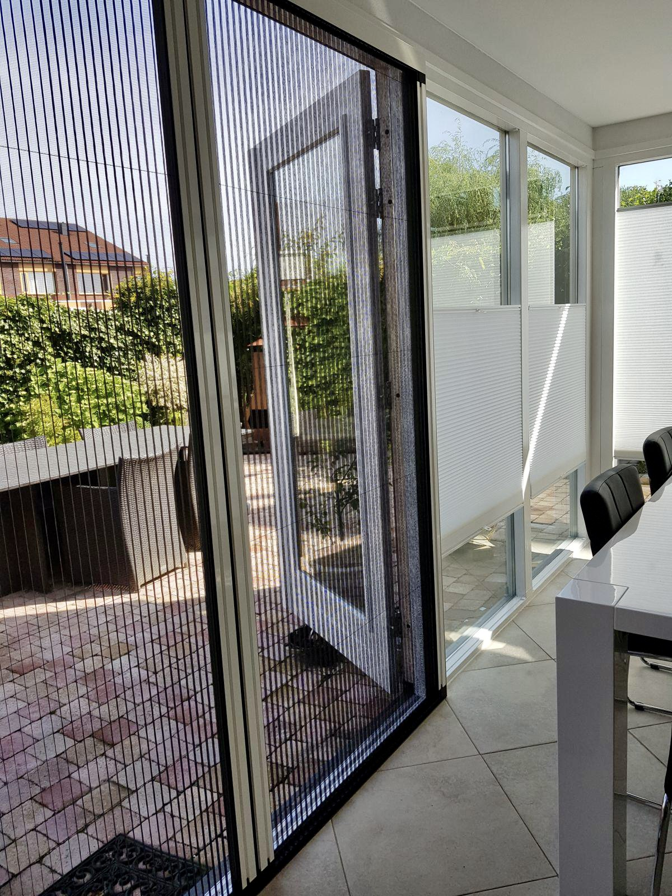
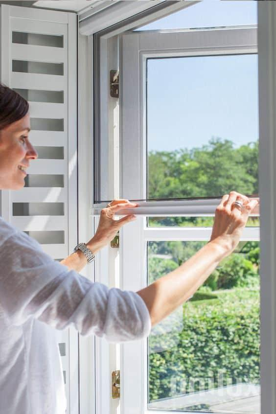
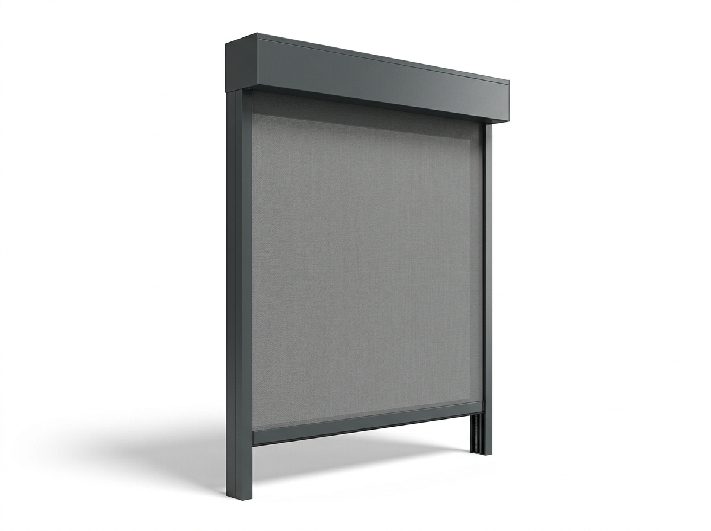
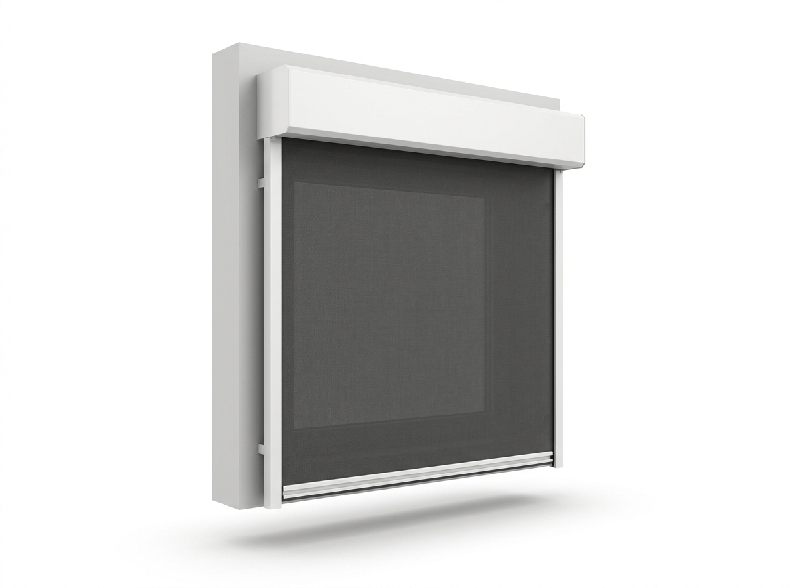
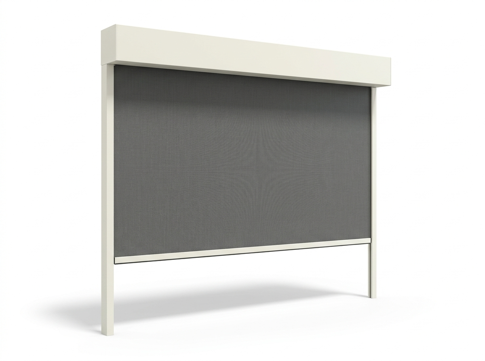
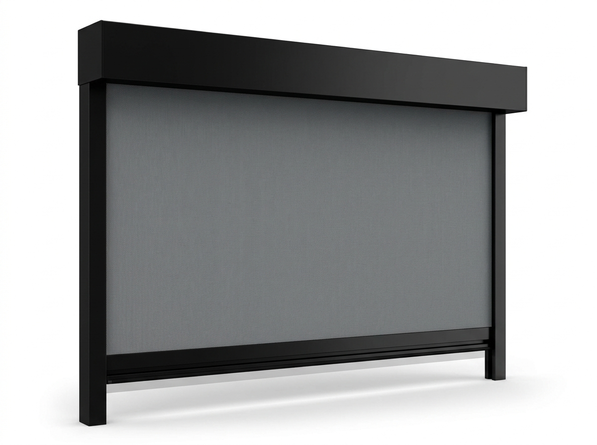

Lucky Zonwering maakt horren en insectenwering op maat en plaatst ze met eigen monteurs in heel Noord-Brabant. Plisséhorren, rolhorren, scharnierhorren, schuifhorren en deurhorren — strak in de kleur van uw kozijn, zodat u ramen en deuren openzet zonder muggen, vliegen of wespen. Vakwerk sinds 1975, gratis advies aan huis en beoordeeld met een 5,0 op Google uit 124 reviews.
Niets is zo fijn als in de zomer ramen en deuren wagenwijd open — maar zonder ongenode gasten. Met horren op maat houdt u muggen, vliegen en wespen buiten, terwijl frisse lucht en daglicht gewoon binnenkomen. Of het nu gaat om een draaikiepraam, een vast kozijn, een terrasschuifpui of een naar buiten draaiende deur: er is altijd een passende, vrijwel onzichtbare oplossing.
Als familiebedrijf maken wij sinds 1975 maatwerk uit eigen huis. Doordat wij de horren zelf op maat maken én met onze eigen monteurs plaatsen, heeft u maar één aanspreekpunt: van het gratis inmeten tot de oplevering en de service daarna. Hieronder leest u alles over insectenwering op maat.
Van een onzichtbare plisséhor voor de schuifpui tot een vaste raamhor voor het slaapkamerraam — voor elk raam en elke deur is er een passende hor, op maat gemaakt en in de kleur van uw kozijn.

Geplooid gaas dat als een harmonica zijwaarts open en dicht schuift. Ideaal voor brede deuren en schuifpuien, aan beide kanten te bedienen.
Offerte aanvragen
Gaas dat soepel in een cassette oprolt en met een veer terugloopt. Leverbaar in opbouw op het kozijn of strak ingebouwd.
Offerte aanvragen
Een scharnierhor (draaihor) opent als een deur; een schuifhor schuift zijwaarts. Beide handig voor terras- en balkondeuren met vrije doorgang.
Offerte aanvragenWelke hor het beste past, hangt af van uw raam of deur en uw manier van gebruik. Dit zijn de uitvoeringen die Lucky Zonwering op maat levert:
Het geplooide gaas van een plisséhor schuift als een harmonica zijwaarts open en dicht en houdt zichzelf op zijn plaats. U bedient hem soepel vanaf beide zijden, wat hem ideaal maakt voor brede openslaande deuren en terrasschuifpuien. Geen veer die terugschiet, gewoon gecontroleerd open en dicht.
Bij een rolhor rolt het gaas op in een nette cassette en loopt het met een veer terug zodra u hem loslaat. Zo blijft de hor onzichtbaar weggewerkt zolang u hem niet gebruikt. Een rolhor is leverbaar als opbouwvariant op het kozijn of strak ingebouwd, en is bij uitstek geschikt voor ramen.
Een scharnierhor — ook wel draaihor — opent als een deur op scharnieren en valt vanzelf weer dicht. Een stevige, eenvoudige oplossing voor enkele deuren naar tuin of balkon, met een vrije doorgang als u naar binnen of buiten loopt.
Een schuifhor schuift zijwaarts langs het kozijn, parallel aan een schuifpui of schuifraam. Praktisch waar geen ruimte is om een hor open te laten draaien en u toch een ruime, vrije doorgang wilt houden.
Een vaste raamhor klikt u in het kozijn voor ramen die u alleen op de kiep of tuimelstand opent. Strak, vlak en vrijwel onzichtbaar — de eenvoudigste en voordeligste insectenwering voor slaapkamer- en badkamerramen.
Voor deuren combineert Lucky Zonwering bovenstaande principes tot een passende deurhor: een plissé-hordeur voor brede puien, een scharnierhor voor enkele deuren of een schuifhor langs de pui. Zo loopt u vrij in en uit naar de tuin, terwijl insecten netjes buiten blijven.
Niet zeker welke hor het beste bij uw situatie past? Stel online uw zonwering en horren op maat samen of vraag direct gratis advies aan.
Insectenwering op maat is een kleine investering met een groot effect op uw woon- en slaapcomfort. Dit zijn de belangrijkste voordelen:
Fijnmazig horrengaas houdt muggen, vliegen, wespen en ander ongedierte buiten. Geen gezoem meer in de slaapkamer en geen vliegen op tafel — gewoon rust in huis, ook met de ramen open.
Met horren zet u ramen en deuren onbezorgd open. U ventileert natuurlijk, houdt het 's nachts koel en behoudt al het daglicht, want het transparante gaas valt nauwelijks op.
Of het nu een plissé, rol-, scharnier- of schuifhor is: elke uitvoering werkt soepel en intuïtief. Open wanneer u wilt, dicht wanneer het nodig is — zonder gedoe.
De aluminium profielen worden afgestemd op uw kozijn in antraciet, wit, crème of zwart. Zo sluit de hor naadloos aan op uw raam of deur en blijft uw gevel rustig en strak.
Aluminium roest niet en gaat jarenlang mee. Met af en toe schoonmaken en soepel houden van de geleiders blijft uw insectenwering probleemloos werken, seizoen na seizoen.
Benieuwd naar de mogelijkheden en een richtprijs? Vraag een gratis offerte op maat aan, geheel vrijblijvend.
De aluminium horprofielen worden afgestemd op uw kozijn in vier tijdloze kleuren, zodat de hor vrijwel onzichtbaar opgaat in uw raam of deur. Onderstaande kleurstalen geven de tinten weer.

Strak en modern — de populairste keuze, mooi bij antracieten kozijnen.

Licht en klassiek, past bij witte en lichte kozijnen.

Warm en zacht, mooi bij landelijke woningen en houten kozijnen.

Eigentijds en strak, een markant accent bij zwarte kozijnen.
Met een plissé-hordeur of schuifhor loopt u vrij in en uit naar terras of tuin, terwijl muggen en vliegen netjes buiten blijven. Zo geniet u van een doorwaaiwoning in de zomer, zonder het 's avonds te hoeven betalen met gezoem in de slaapkamer.
Onze horprofielen worden in de kleur van uw raam of deur uitgevoerd, zodat de hor vrijwel wegvalt tegen het kozijn. Het transparante gaas houdt uw uitzicht open en uw gevel rustig — insectenwering die u nauwelijks ziet, maar volop merkt.
Horren laten plaatsen moet vooral ontzorgen. Daarom regelen wij alles uit één hand, in heldere stappen:
Wij komen vrijblijvend bij u langs in Oss of elders in Brabant, bekijken uw ramen en deuren en adviseren over het type hor, de gaassoort en de kleur. Daarna meten we elk kozijn nauwkeurig op, zodat de hor straks precies past.
Uw horren worden op maat gemaakt in onderhoudsarm aluminium, in de kleur van uw kozijn. Geen standaardmaten die net niet passen, maar maatwerk uit één hand — met een korte levertijd en een scherpe prijs.
Onze eigen, vaste monteurs plaatsen de horren netjes, strak en vakkundig en controleren of alles soepel werkt. Geen onderaannemers, maar vakmensen die u kent en die uw woning schoon achterlaten.
Ook na de montage blijft Lucky Zonwering bereikbaar voor service en onderhoud. Een geleider die soepeler moet of een vraag over reiniging? Dankzij onze eigen voorraad bent u snel weer geholpen.
Horren combineren wij graag met onze andere maatwerkoplossingen voor zon, privacy en buitenleven. Bekijk onze zusterproducten:

Verduistering, isolatie en inbraakwerendheid in elke kozijnkleur.
Bekijk rolluiken
Zonwering en privacy met behoud van uitzicht en daglicht.
Bekijk screens
Knikarmschermen en uitvalschermen voor schaduw op uw terras.
Bekijk terraszonwering
Een echte buitenkamer met glasdak, jaarrond te gebruiken.
Bekijk veranda's
Overkapping met verstelbare lamellen voor zon, schaduw of ventilatie.
Bekijk pergola'sOnze werkplaats en voorraad zitten aan de Ussenstraat 26A in Oss. Doordat we lokaal werken én monteren, zijn de lijnen kort: we meten snel in, leveren op maat en blijven bereikbaar voor service. Veel Brabantse woningen — van vrijstaande huizen tot rijwoningen en appartementen — hebben wij al van horren en insectenwering voorzien.
Naast Oss plaatsen wij horren in de omliggende dorpen en steden:
Bekijk gerust onze projecten in en rond Oss of lees waarom klanten voor Lucky kiezen.
Lucky Zonwering levert het complete assortiment insectenwering op maat: plisséhorren, rolhorren in opbouw- en inbouwuitvoering, scharnier- en draaihorren, schuifhorren, vaste raamhorren en deurhorren. Tijdens het gratis advies aan huis bepalen we samen welke uitvoering het beste past bij uw raam of deur, uw kozijn en uw manier van gebruik.
Een plisséhor heeft een geplooid gaas dat als een harmonica zijwaarts open en dicht schuift en aan beide kanten te bedienen is, ideaal voor brede deuren en terrasschuifpuien. Een rolhor heeft gaas dat in een cassette oprolt en met een veer terugloopt, handig voor ramen. Beide maakt Lucky Zonwering op maat in de kleur van uw kozijn.
Ja. Voor deuren plaatsen wij scharnierhorren (draaihorren), plissé-hordeuren en schuifhorren. Zo houdt u insecten buiten terwijl u vrij in- en uitloopt naar tuin of balkon. Lucky Zonwering meet uw deurkozijn nauwkeurig in en maakt de deurhor passend en strak in kleur.
Ja. Het fijnmazige horrengaas houdt muggen, vliegen, wespen en ander ongedierte buiten, terwijl frisse lucht en daglicht gewoon binnenkomen. Voor wie last heeft van zeer kleine insecten of pollen is er fijnmazig of pollenwerend gaas leverbaar; Lucky Zonwering adviseert u welke gaassoort het beste past.
Onze horren zijn standaard leverbaar in antraciet, wit, crème en zwart in onderhoudsarm aluminium, zodat het profiel naadloos aansluit op uw kozijn. Lucky Zonwering stemt de kleur af op uw raam of deur, zodat de hor nauwelijks opvalt en uw gevel strak blijft.
Ja. Lucky Zonwering maakt de horren op maat en plaatst ze met eigen monteurs. Zo heeft u één aanspreekpunt van het gratis inmeten tot de montage en de nazorg, met een scherpe prijs en een nette, vakkundige plaatsing in heel Noord-Brabant.
In vrijwel alle gevallen wel. Of u nu draaikiepramen, een vast kozijn, een schuifpui of een naar buiten draaiende deur heeft, er is bijna altijd een passende horoplossing. Door nauwkeurig in te meten zorgt Lucky Zonwering voor een hor die precies past en soepel werkt.
Weinig. Een aluminium hor is onderhoudsarm en roest niet. Het gaas houdt u schoon door het af en toe af te nemen of voorzichtig te stofzuigen; de geleiders blijven soepel met een enkele druppel siliconenspray. Zo gaat uw insectenwering jarenlang probleemloos mee.
De prijs van een hor hangt af van het type (plissé, rol, scharnier, schuif of vast), de afmetingen, de kleur en de gaassoort. Lucky Zonwering meet gratis bij u in en geeft daarna een heldere offerte op maat, geheel vrijblijvend.
Ja. Vanuit Oss zijn onze monteurs dagelijks actief in heel Noord-Brabant, waaronder Berghem, Heesch, Uden, Veghel, Ravenstein en 's-Hertogenbosch. Lucky Zonwering verzorgt advies, montage en nazorg van uw horren in uw gemeente.